לשימושכם,
בברכה,
סא״ל איציק ביטון רע״ן הדרכה,
קריית ההדרכה.
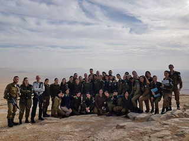
עושים היסטוריה בביה"ס
אירוע היסטורי התרחש בביה"ס לפיקוד והדרכה- חניך מספר 5,000 קיבל תעודת הסמכה מטעם ביה"ס, והדבר קרה במהלך טקס סיום קורס הכש"ם
אחוד לחוגרים מחזור 43. בהתחשב העובדה כי ביה"ס פתח את שעריו רק לפני שלוש שנים, מדובר בהישג משמעותי ביותר. אגב, חיל הטנ"א מוביל את
רשימת הבוגרים של ביה"ס עם קרוב ל-1,100 מוכשרים.
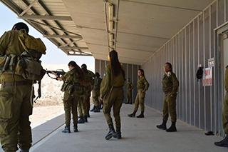
קומ"כ בכל הכח
במהלך חודש מרץ התקיימה בביה"ס פנימייה לימודית בנושא פיתוח קורס מפקדי כיתות (קומ"כ) אשר מטרתו היא יצירת סינרגיה בין הכשרות הכש"ם ומד"ט
המסורתיות. בפנימייה לקחו חלק נציגי כלל המדורים בענף הדרכה, כאשר קדמה לה עבודה אינטנסיבית מול גופי פיתוח הדרכה של כלל בה"די הקרייה.
תוצרי הפנימייה יהוו בסיס איתן לבניית רציונאל התכנים והשיטות של ההכשרה החדשה. מחזור הפיילוט עתיד להיפתח כבר במהלך חודש מאי 2018.
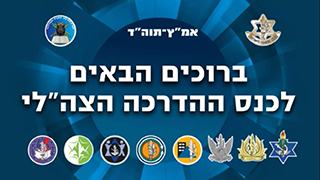
כנס ההדרכה צה"לי
בתאריך כ"ט בשבט תשע"ח, 14/02/2018, התקיים כנס ההדרכה הצה"לי בקריית ההדרכה בהפקת מדור טי"ל. בכנס הוצגו הרצאות, מושבים ותערוכה הדרכתית טכנולוגית בה הציגו מגוון יחידות צה"ל. הכנס עסק בלמידה רוחבית מתהליכי הדרכה צבאיים, בסוגיות מרכזיות בתורת ההדרכה ודובר על המתח שבין חדשנות למסורתיות בלמידה בצה"ל כיום ובעתיד.
חוויית הדרום מחזור ו'
שלושה ימים של היכרות עם מרחב הנגב למפקדים מכלל מסגרות קריית ההדרכה.
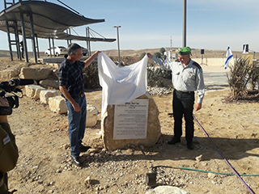
חנוכת גבעת אריאל שרון ונטיעת מאות עצי זית
חנוכת גבעת אריאל ונטיעות ט"ו בשבט בסוף ינואר לציון ט"ו בשבט, נערכו מספר אירועי נטיעות של מפקדת
קריית ההדרכה והבה"דים. נטעו מאות עצי זית. בראשית פברואר חנכנו את גבעת התצפית ע"ש אריאל שרון בנוכחות בנו גלעד.
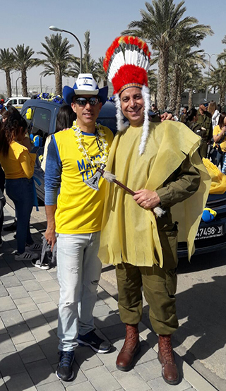
עדלאידע שלישית בקריית ההדרכה ושנייה של כלל המסגרות
זו השנה השלישית בה מתקיימת עדלאידע חגיגית לפורים בקריית ההדרכה. בעדלאידע הססגונית השתתפו נציגים מכלל הבה"דים.
בה"ד 13 אשר התחפשו לאסירים זכו במקום הראשון בתחרות המייצגים.
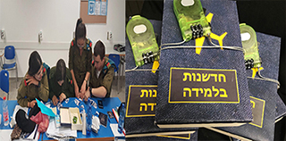
חדשנות בלמידה- גם בהכש"ם חילי
כחלק מהטמעת החדשנות בקריית ההדרכה העביר מדור טי"ל שיעורי חדשנות בלמידה בהכש"ם חילי. ברבעון האחרון בבה"ד 7. השיעור הועבר באמצעות קופסאות בריחה- שיטת למידה חדשנית מסוג למידה הרפתקנית.
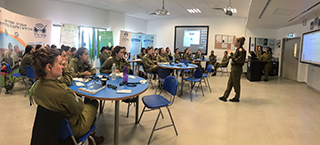
מהפך בחדשנות- בבה"ד החינוך
במסגרת עמ"ט על שילוב חדשנות בהכשרות, הפיק בה"ד החינוך בשת"פ מדור טי"ל
יום חדשנות בלמידה. היום עסק בהתנסות בשיטות למידה ואמצעים מתקדמים ועבודה מעשית
על פערים ופתרונות טכנולוגיים אפשריים בבה"ד.
פיתוחי טי"ל
ברבעון א' מדור טי"ל הטמיע חדשנות בלמידה, לפניכם מספר דוגמאות:
יום חדשנות בבה"ד חינוך
העברת סדנת בכירים לבה"ד 6
העברת שיעורי חדשנות לבה"ד 7
ברבעון א' פותחו מספר רב של תוצרים גנריים וייעודים לבה"די קריית ההדרכה. לפניכם מספר דוגמאות:
מדור ט"יל גם הפיק את כנס הדרכה צה"לי בשת"פ עם תוה"ד מטכ"ל-
למידע נוסף
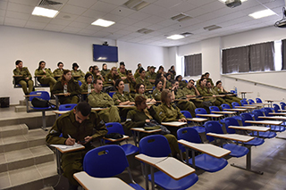
היערכות למכרז לפסיכומטרי
במהלך החודשים הקרובים עתידה להיפתח כיתה למפקדים ואנשי קבע להכנה למבחן הפסיכומטרי. הקורס הינו ללא עלות ופתוח להרשמה לכלל הבה"דים והמפקדה. לאחר אישור
משרד הביטחון תפורסם החברה שזכתה במכרז, תאריכי המפגשים ורשימת המשתתפים הסופית.
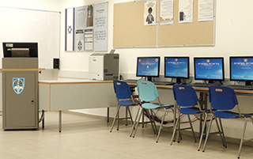
הקמת כיתות לבכירים
2 כיתות ומועדון במבנה 401 אשר ישמשו את הכשרות הבכירים (רס"ן ומעלה).
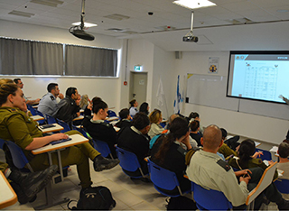
לקויות למידה
בליווי של ד"ר יהודית אלדור התקיימה השתלמות לכלל נאמני לקויות הלמידה בבה"דים. מטרת ההשתלמות הייתה
מתן כלים לסגלי ההכשרות להקל על החניכים בעלי לקויות למידה ולהתאים להם את המענה המיטבי.
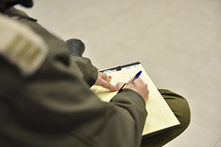
מחקר מועילות
ביצוע מחקר על בסיס הנתונים הקיימים שנאספו בשנה וחצי האחרונות בקריית ההדרכה לבחינת תרומתה של קריית ההדרכה למועילות המבצעית של צה"ל.